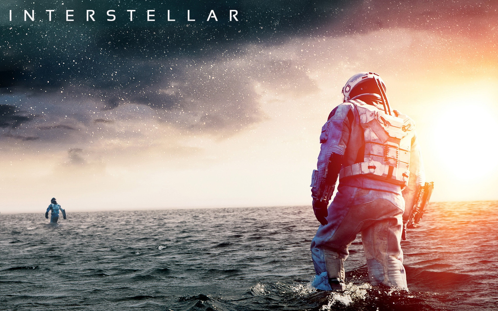
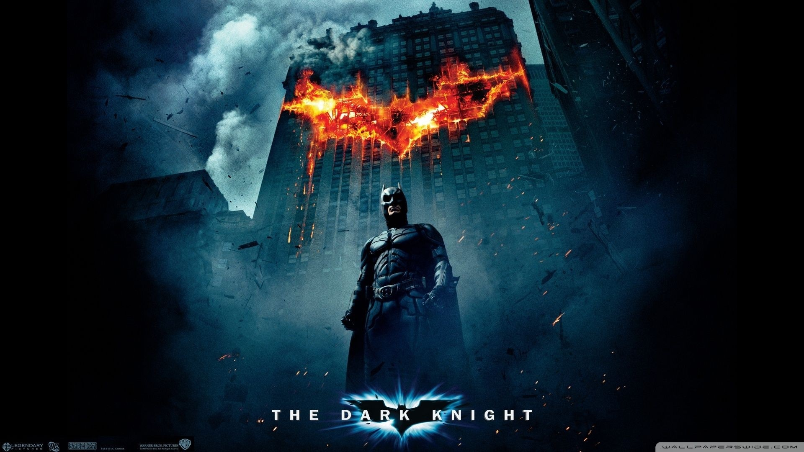
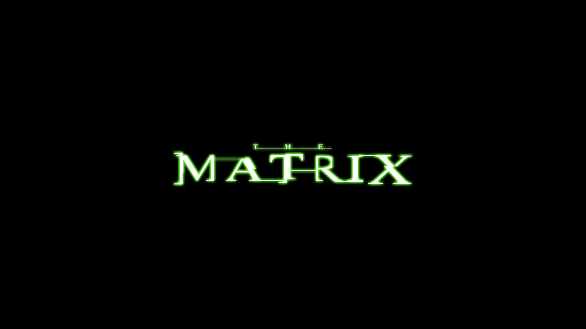
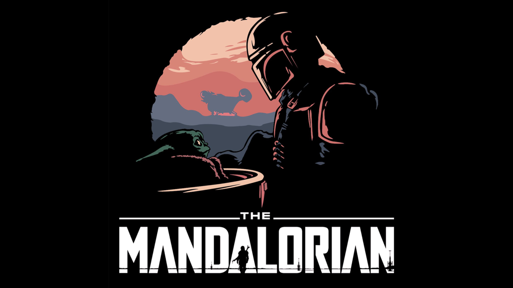

Oyunlar
Last of Us

Last of Us: Tüm insanlığı etkileyen bir hastalık sonrası yolları kesişen Joel ve Elie'nin geçirdikleri serüveni konu almakta.
Beyond:Two Souls
RİME
Bastion


Rime:Şiddetli bir fırtınanın ardından gözlerini gizemli bir adada açan bir çocuk adanın gizemi hakkında bilgi sahibi olmaya çalışmaktadır.

Bastion: Kid isimli kahramanın Calamity olarak bilinen büyük bir felaketin tüm şehri yok ettiğini, birkaç kişi hariç kimsenin hayatta olmadığını görmesi üzerine dünyayı istila eden yaratıkları öldürmeye çalışması ve dünyasını eski haline getirmek için çabalamasıdır.
Filmler
Interstellar
Lord of the Rings Trilogy
The Dark Knight
Matrix

Interstellar:Bir grup astronotun bir solucan deliğinden geçerek insanların yaşayabileceği yeni bir yer arayışı konu edilmektedir.

Lord of the Rİngs:Dünyanın kaderini değişterecek olan yüzükten kurtulmak için verilen mücadeleyi konu ediyor.

The Dark Knight:Halk için büyük bir tehdit oluşturan Joker'in ortaya çıkması ile kaosa dönen Gotham Sokakları'nın yeniden kurtarıcılığını üstlenen Batman'in hikayesini konu ediyor.

Matrix:Karakterimiz Neo, matrix filmi içinde gerçek dünyada kalan son insan şehri Zion’u makinelerin saldırısından korumaya çalışıyor. Bu sırada, Matrix’i korumaya çalışan bilinçli bilgisayar programları olan ajanlar ile mücadele etmesi gerekiyor. Özellikle Ajan Smith, Neo’ya çok sorun çıkartıyor. Zira Neo kendi dönüşümünü ve keşfini yaşarken, benzer şekilde Ajan Smith de bir değişim yaşıyor. Seçilmiş kişi Neo insanüstü güçlerini ve hızlarını eşleştiriyor. Mermileri durdurup ve hatta uçabilir seviyeye ulaşıyor matrix sistemi içinde. Bu imkansız gibi görünen kendisiyle ilgili keşifleri, onun aslında beklenen kurtarıcı olduğunu kanıtlıyor. Böylece Neo, insanlığın kurtarıcısı ve makinelerin savaşçısı olarak mücadele veriyor.
Diziler
Rick and Morty
One Punch Man
The Boys
Mandolorian

Rick and Morty:kendi zamanlarını aile hayatı ve boyutlar arası yolculuk arasında bölüştürmüş alkolik bilim insanı Rick ve onun torunu Morty'nin maceralarını anlatıyor.

One Punch Man:Tek bir yumrukla herhangi bir rakibi yenebilen, ancak ezici gücü nedeniyle meydan okuma eksikliğinden sıkıldıktan sonra değerli bir rakip bulmaya çalışan bir süper kahraman olan Saitama'nın hikâyesini anlatıyor.

The BoysSüper güçlere sahip kişilerin Vought International isimli bir şirkete ait olduğu ve markalaştırıldığı bir evrende geçmektedir. Bu kişiler her ne kadar toplum tarafından kahraman olarak görülse de, çoğunluğu gerçek hayatlarında kibirli ve yozlaşmıştır. Dizide başlıca iki grup bulunmaktadır: Vought International'ın ana süper kahraman grubu The Seven ve yozlaşmış süper kahramanları kontrol altında tutan The Boys.

The Mandalorian:12 Kasım 2019'da Disney+'ta yayımlanmaya başlayan, uzay Western'i tarzı, internet tabanlı televizyon dizisidir. Yıldız Savaşları evreninde geçen dizi, Jedi'ın Dönüşü döneminden beş yıl sonra başlar ve Yeni Cumhuriyet'in ulaşamayacağı yerlerde bir Mandalorlu ödül avcısını izler.
Müzik Grupları
Rammtein
Metallica
Pentagram
Nightwish

Rammstein:Rammstein, Alman bir Neue Deutsche Härte grubudur. Şarkılarının çoğu Almanca olsa da İngilizce, İspanyolca, Rusça ve Fransızca şarkıları da vardır.[1] 1994'te Berlin'de kurulan grup dünya üzerinde 15 milyon albüm satmıştır. Grubun altı üyesi, kuruluşundan beri hiç değişmemiştir. Rammstein, ona ABD dahil birçok ülkede ödül kazandıran sahne performanslarıyla da ünlüdür.Grup, ismini Ramstein hava kazasından alır, ama karışıklığa yol açmaması için bir "m" harfi daha eklenmiştir.

Metallica:1981 yılında kurulan Amerikalı bir heavy metal grubudur. Davulcu Lars Ulrich ve vokalist/gitarist James Hetfield tarafından Los Angeles'ta kurulduktan sonra kariyerinin büyük kısmını San Francisco'da sürdürmüştür. Hızlı tempoları ve agresif müziğiyle bilinen grup; Slayer, Megadeth ve Anthrax ile birlikte thrash metalin "dört büyüklerinden" biri olarak kabul edilir. 1981 yılında James Hetfield'ın, Lars Ulrich'in grup kurmak için yerel bir gazetede verdiği ilana yanıt vermesi ile kurulan grubun 2003 yılı itibarıyla kadrosu; vokal ve ritim gitarda James Hetfield, davulda Lars Ulrich, lead gitarda Kirk Hammett ve bas gitarda Robert Trujillo şeklindedir.

PentegramPentagram (veya Türkiye dışındaki adıyla Mezarkabul), kuruculuğunu Hakan Utangaç ve Cenk Ünnü'nün yaptığı Türk heavy metal grubudur.

Nightwish:Finlandiya'nın Kitee şehrinde kurulmuş senfonik metal grubu.